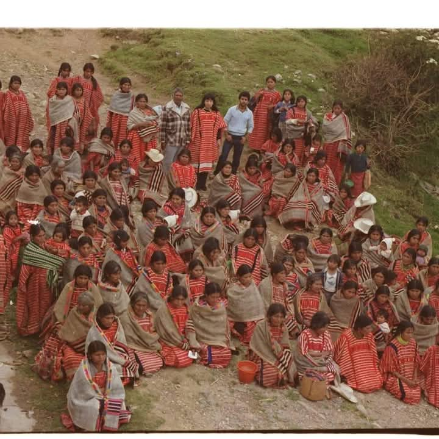
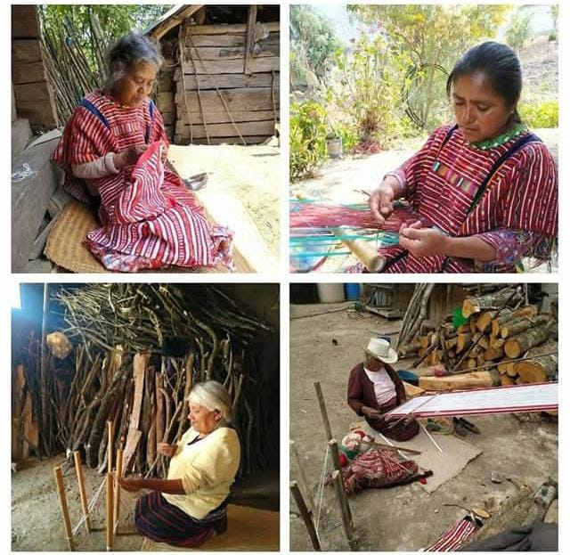
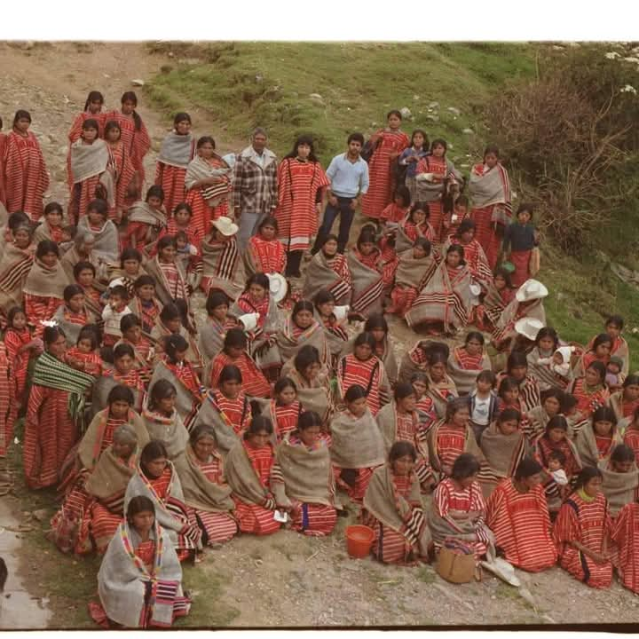
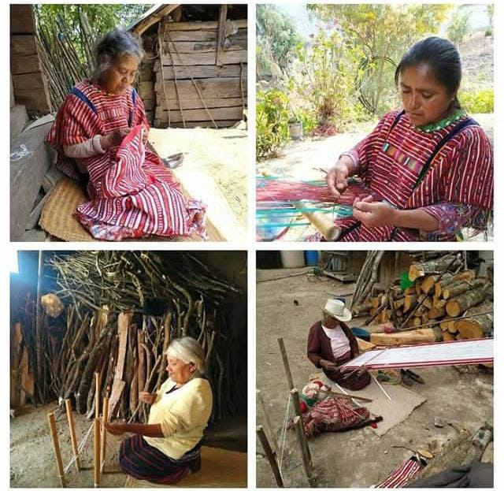

|
|
| principal |        |
La historia de la comunidad de “La Laguna Guadalupe”. Anteriormente se llamó “Nichrun” sig. Los árboles. Porque había muchos árboles de encino muy frondosos en el lugar. nâ gananï̂n rayiꞋî yumanꞋ “DuꞋhua dahuèe”. Àsì nâ ni̱ gahuin si-yu̱gui “Nichrun” ni̱ ruhuaj ga̱ta nej chrun. DadinꞋ ûta gimân runinj nìko xi riñan lugâ nânj. La Laguna Guadalupe Fundación. Anteriormente se llamaba “San Juan Laguna Putla”. Pero debido a grandes confunciones con otra comunidad que tenían el mismos nombre que es San Juan Laguna, Putla y ambos perteneciente al municipio de Putla, fue así que tuvieron que cambiar el nombre de la comunidad así como se conoce ahora “La Laguna Guadalupe”, es un lugar muy bonito porque a pesar de que se ubica en un lugar alto, cuenta con dos lagunas en donde se puede tomar un descanso y disfrutar de esa belleza que el Dios de los cielos nos ha otorgado. Por el año de 1917, Se hacendaron los primeros fundadores de esta comunidad; que fueron Domingo Guzmán y Francisco Guzmán; En 1929 se fundó la primera escuela que se conocía como el preparatorio; en 1938 se construyó una casa de viga para la representación municipal pero fue quemada en ese año por desacuerdo de la cabecera municipal de Chicahuaxtla; en 1939 a raíz de la muerte de Patricio Hernández, los pobladores de esta comunidad gestionaron, fue así que se reconoció como agencia de policía municipal, el primero que fungió como agente de policía municipal fue el C. Gregorio Aragón, en este tiempo fue que se llamó San Juan Laguna; En 1970 por decreto oficial obtuvo la categoría de agencia municipal, con el nombre oficial de La Laguna Guadalupe, el primer agente municipal fue el C. Zacarías López Martínez. Aproximadamente como en el año de 1980 obtuvo su Representación de Bienes Comunales; DuꞋhua dahuèe / Nichrun Nnga gaꞋanj gi̱ngaj yumanꞋan. Àsìj nâ ni̱ gu̱ꞌna San Juan Laguna, Putla. Sani̱ ñan ûta gachej ruhuâ nej dukuâ sun nìko nne akuej dadinꞌ huê gè danj gùꞌnàj aꞋngô yumanꞋ nngaj neꞌ ña̱n yumanꞋ Ngaj ni̱ gu̱ꞌna San Juan Laguna, Putla. Ni̱ guñan chre gùꞌnàj ngue ni̱ gùñàn chre nikòꞋ ngue rukû yumanꞋ Ngaj, huê rayiꞋî dânj ni̱ naduna nej sij si-yu̱gui ni̱ duguꞌnâj nej sij dàj rûnꞋ gùꞌna nda gui hìaj “DuꞋhua dahuèe”, ni̱ ûta nìhiàꞋ hua lugâ nânj dadinꞋ nùnj huin si yàkàn ta raa̱ kïj ï, sani̱ nu̱n huìj dahuèe ni̱ ga̱ꞌhue ganaran ruhuôꞌ ni̱ ga̱nahuin nìhiàꞋ ruhuôꞋ gi̱niꞋhioꞋ riñan lugâ nânj dadinꞋ Ma̱ꞌan ÑaꞋanj an nne yàtàꞋa huin sa giꞋhiaj. HioꞋ mîn tá Ꞌïn sientu tá yi̱nu̱nꞋ huìj, gahuin nnga gaꞋanj ga̱ne si̱nï̱n nguèj sachij gùꞋnàj Domingo Guzmán ni̱ Francisco Guzmán; hioꞋ mîn tá ꞌïn sientu tá ko̱ Ꞌïn gaꞋanj gi̱ngaj si̱nï̱n hueꞋ digiꞋñun gùꞌnàj preparatorio; hioꞋ mîn tá Ꞌïn sientu tá yinunꞋ huàꞋnï̀nj giꞋhiaj nej sij Ꞌngo̱ hueꞋ ka̱j yu̱ma̱nꞌ ga̱huin dukuâ suun, sani̱ gaka man giꞋhiaj nej sôꞋ màn yumanꞋ nìko; ni̱ hioꞋ mîn tá Ꞌïn siento tá ko̱ yi̱nu̱nꞋ ga̱Ꞌanj nnga gahuiꞋ sachij Patricio Hernández, ni̱ gayiꞋì nej sôꞌ màn yumanꞋ Nichrun ni̱ ginûn huin nej sôꞋ ni̱ gachín nej sôꞋ si ga̱na̱huin dukuâ suun, ni̱ hioꞋ nânj gahuin Agensia de Polisia ni̱ sí ginikaj su̱n si̱nï̱n gahuin Gregorio Aragón diû nânj ni̱ gùꞋna San Juan Laguna ni̱ huê danj na̱nj gùꞋna “Nichrun”; hioꞋ mîn tà Ꞌïn sientu tá huaꞋnïnj xihia chiꞋ gahuin nnga ganariꞋ nej sij giꞋhiaj kamara ñan màn nej diputado si ga̱huin Agensia Munisipal, ni̱ gu̱Ꞌna DuꞋhua dahuèe ni̱ ganataꞋ raj Guadalupe, sachij si̱nï̱n gahuin agente gahuin sachij Zacarías López Martínez. Ni̱ daꞋnga Ꞌngo̱ si mîn tá Ꞌïn sientu tá ga̱Ꞌanj xihia ni̱ ganikïnꞋ sôꞋ ganakaj su̱n guendâ gi̱nikaj su̱n sôꞋ guendâ hioꞋóo. Nombres de los parajes cercanos a la comunidad. Dakó nichrun Pie del palo Ta duguꞌhua Llano de descanso de toro Ta yiche La Laguna seca Riñan sitïn Ladera de uña Nne rio Agua de la canoa Yiꞌî dakuj nuhuej Pie de tierra blanca Yiꞌî ganee Pie de desbarrabcader Yiné naꞌhui Cañada te de limón<7 Nâtàj a Llano de ceniza Dukuâ yaꞋñanj Cueva de coyote Chrá nu̱n hue Barranca de maguey Kïj ato Cerro de conejo Chrá gùchru Barranca de grillo Yiné rá nikïnꞌ Barranca parada Dihua Garabato chico Raka Agua de cacalote Dakan yirê Loma de rey Yirahue Llano de brinco Yichrá ganee Arriba de desbarrancadero Yiné rogotoj barranca dormida Dakan riñan hu̱ej Loma de cueva Yiꞌî retanj Llano flor de sangre Kïj uñanj Cerro hervido Nne yiꞋî kïj uñanj Agua pie del cerro hervido Yichrá rugutsìi Espalda de la cruz. Por el escritor y traductor: Felipe Santiago Rojas Apoyado por: Pablo Álvarez López. |
 |